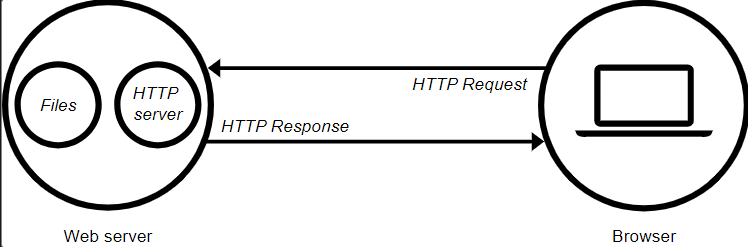

Web Server
The term web server can refer to hardware or software, or both of them working together.
1. On the hardware side, a web server is a computer that stores web server software and a website's component files (for example, HTML documents, images, CSS stylesheets, and JavaScript files). A web server connects to the Internet and supports physical data interchange with other devices connected to the web.
2. On the software side, a web server includes several parts that control how web users access hosted files. At a minimum, this is an HTTP server. An HTTP server is software that understands URLs (web addresses) and HTTP (the protocol your browser uses to view webpages). An HTTP server can be accessed through the domain names of the websites it stores, and it delivers the content of these hosted websites to the end user's device.
At the most basic level, whenever a browser needs a file that is hosted on a web server, the browser requests the file via HTTP. When the request reaches the correct (hardware) web server, the (software) HTTP server accepts the request, finds the requested document, and sends it back to the browser, also through HTTP. (If the server doesn't find the requested document, it returns a 404 response instead.)

Basic representation of a client/server connection through HTTP
To publish a website, you need either a static or a dynamic web server.
A static web server, or stack, consists of a computer (hardware) with an HTTP server (software). We call it "static" because the server sends its hosted files as-is to your browser.
A dynamic web server consists of a static web server plus extra software, most commonly an application server and a database. We call it "dynamic" because the application server updates the hosted files before sending content to your browser via the HTTP server.
For example, to produce the final webpages you see in the browser, the application server might fill an HTML template with content from a database. Sites like MDN or Wikipedia have thousands of webpages. Typically, these kinds of sites are composed of only a few HTML templates and a giant database, rather than thousands of static HTML documents. This setup makes it easier to maintain and deliver the content.
Web Client & Web Browser
A web browser (also referred to as an Internet browser or simply a browser) is application software for accessing the World Wide Web or a local website. When a user requests a web page from a particular website, the web browser retrieves the necessary content from a web server and then displays the page on the user's device.
A web browser is not the same thing as a search engine, though the two are often confused. A search engine is a website that provides links to other websites. However, to connect to a website's server and display its web pages, a user must have a web browser installed.
Communication: Browser and Server
LWeb browsers and web servers function together as a client-server system. In computer networking, client-server is a standard method for designing applications where data is kept in central locations (server computers) and efficiently shared with any number of other computers (the clients) on request. All web browsers function as clients that request information from websites (servers).
Numerous web browser clients can request data from the same website. Requests can happen at all different times or simultaneously. Client-server systems conceptually call for all requests to the same site to be handled by one server. In practice, however, because the volume of requests to web servers can sometimes grow very large, web servers are often built as a distributed pool of server computers.
For websites popular in different countries around the world, this webserver pool is geographically distributed to help improve the response time to browsers. If the server is closer to the requesting device, the time it takes to deliver the content is faster than if the server were further away.